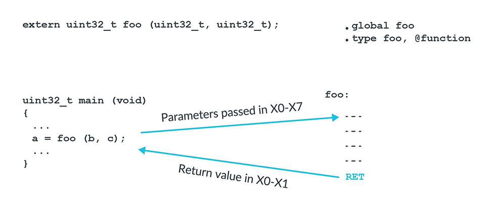

Calling conventions
In computer science, a calling convention is an implementation-level (low-level) scheme for how subroutines or functions receive parameters from their caller and how they return a result.
When some code calls a function, design choices have been taken for where and how parameters are passed to that function, and where and how results are returned from that function, with these transfers typically done via certain registers or within a stack frame on the call stack.
There are design choices for how the tasks of preparing for a function call and restoring the environment after the function has completed are divided between the caller and the callee. Some calling convention specifies the way every function should get called. The correct calling convention should be used for every function call, to allow the correct and reliable execution of the whole program using these functions.
x86#
x86 calling conventions
x86 Disassembly/Calling Conventions
docs#
Application binary interfaces:
Microsoft Learn:
Configure C++ projects for 64-bit, x64 targets
System V ABI:
- System V Application Binary Interface Intel386 Architecture Processor Supplement - 4th Edition
- System V Application Binary Interface AMD64 Architecture Processor Supplement(With LP64 and ILP32 Programming Models)
- System V psABI for AMD64 - official repository
refs#
The history of calling conventions:
CS 61 - Assembly 2: Calling convention – 2018
Guide to x86 Assembly - Calling Convention
What are the calling conventions for UNIX & Linux system calls on x86-64?
Function calling conventions
Guide: Function Calling Conventions
C Function Call Conventions, UMBC CMSC 313, Spring 2002
CS 4120/ENGRD 4120 Spring 2022 - Calling Conventions
SYSC 3006 - Computer Organization - Subroutines
arm#
ATPCS: ARM-Thumb Procedure Call Standard
AAPCS: Arm Architecture Procedure Call Standard
docs#
ABI - Application Binary Interface
-
Specifications @github
- ABI for the Arm 32-bit Architecture
- ABI for the Arm 64-bit Architecture
-
About the ARM-Thumb Procedure Call Standard
- Register roles and names
- The stack
- Parameter passing
Application binary interfaces | Apple Developer Documentation:
Configure C++ projects for ARM processors | Microsoft Learn:
- Overview of ARM ABI Conventions
- Overview of ARM64 ABI conventions
- Overview of ARM64EC ABI conventions
terms#
aapcs64 - 2.2 Terms and abbreviations:
Program state: The state of the program’s memory, including values in machine registers.
Routine, subroutine: A fragment of program to which control can be transferred that, on completing its task, returns control to its caller at an instruction following the call. Routine is used for clarity where there are nested calls: a routine is the caller and a subroutine is the callee.
Procedure: A routine that returns no result value.Function: A routine that returns a result value.
Argument / parameter: The terms argument and parameter are used interchangeably. They may denote a formal parameter of a routine given the value of the actual parameter when the routine is called, or an actual parameter, according to context.
Activation stack / call-frame stack: The stack of routine activation records (call frames).
Activation record / call frame: The memory used by a routine for saving registers and holding local variables (usually allocated on a stack, once per activation of the routine).
PCS#
A64 Instruction Set Architecture Guide - 27. Procedure Call Standard
The Arm architecture places few restrictions on how general purpose registers are used. To recap, integer registers and floating-point registers are general purpose registers. However, if you want your code to interact with code that is written by someone else, or with code that is produced by a compiler, then you need to agree rules for register usage. For the Arm architecture, these rules are called the Procedure Call Standard, or PCS.
The PCS specifies:
- Which registers are used to pass arguments into the function.
- Which registers are used to return a value to the function doing the calling, known as the caller.
- Which registers the function being called, which is known as the callee, can corrupt.
- Which registers the callee cannot corrupt.
Consider a function foo(), being called from main():

The PCS says that the first argument is passed in X0, the second argument in X1, and so on up to X7. Any further arguments are passed on the stack. Our function, foo(), takes two arguments: b and c. Therefore, b will be in W0 and c will be in W1.
Why W and not X? Because the arguments are a 32-bit type, and therefore we only need a W register.
X0 reserved for this pointer in C++
In C++, X0 is used to pass the implicit this pointer that points to the called function.
Next, the PCS defines which registers can be corrupted, and which registers cannot be corrupted. If a register can be corrupted, then the called function can overwrite without needing to restore, as this table of PCS register rules shows:
| X0-X7 | X8-X15 | X16-X23 | X24-X30 |
|---|---|---|---|
| Parameter and Result Registers (X0-X7) | XR (X8) | IP0 (X16) | Callee-saved Registers (X24-X28) |
| - | Corruptible Registers (X9-X15) | IP1 (X17) | FP (X29) |
| - | - | PR (X18) | LR (X30) |
| - | - | Callee-saved Registers (X19-X23) | - |
For example, the function foo() can use registers X0 to X15 without needing to preserve their values. However, if foo() wants to use X19 to X28 it must save them to stack first, and then restore from the stack before returning.
Some registers have special significance in the PCS:
-
XR- This is an indirect result register. Iffoo()returned a struct, then the memory for struct would be allocated by the caller,main()in the earlier example.XRis a pointer to the memory allocated by the caller for returning the struct. -
IP0andIP1- These registers are intra-procedure-call corruptible registers. These registers can be corrupted between the time that the function is called and the time that it arrives at the first instruction in the function. These registers are used by linkers to insert veneers between the caller and callee. Veneers are small pieces of code. The most common example is for branch range extension. The branch instruction in A64 has a limited range. If the target is beyond that range, then the linker needs to generate a veneer to extend the range of the branch. -
FP- Frame pointer. -
LR-X30is the link register (LR) for function calls.
refs#
Stacks on ARM processors.doc
Armv8-M Exception Model User Guide - Stack frames
System V ABI for the Arm® 64-bit Architecture (AArch64)
Subroutines and Parameter passing.ppt
iOS Assembly Tutorial: Understanding ARM
ARM 过程调用标准 AAPCS 以及堆栈使用
arm64程序调用规则
Understanding Procedure Call Standard for Arm Architecture — Part 1
堆和栈调用惯例 - 以ARMv8为例
ARM二进制程序的函数调用过程栈的变化详解
安卓逆向: 这是一篇逆向基础函数在ARM32中的刨根问底